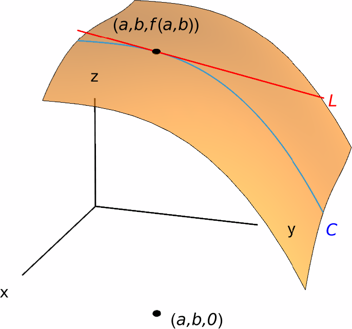
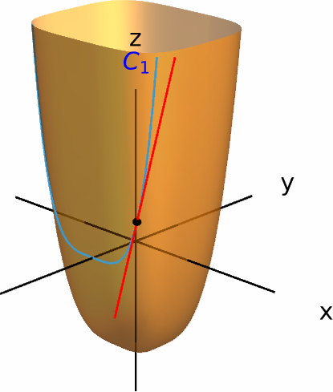
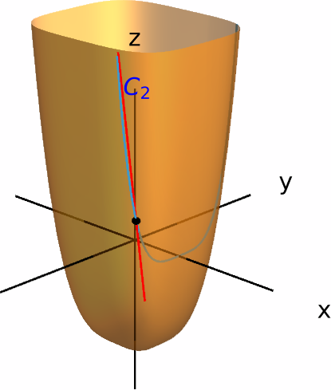

Partial Derivatives
The purpose of this section is to define and interpret the concept of partial derivatives of functions of several variables. The key behind is that, given a function $z=f(x_1,\dots,x_n)$, we will understand how the variable $z$ changes when we only modify one of the variables (while leaving the others unchanged).
While the above formula may seem complicated at first, the good news is that computing a partial derivative is done in the same way as we compute usual derivatives for functions of one variable. Let us discuss why this is the case.
Suppose, as before, that $z=f(x_1,\dots,x_n)$ is a function and $(a_1,\dots,a_n)$ is a point in the domain of $f$. We define a new function of one variable $t$, given by \[ g(t)=f(a_1,\dots,a_{i-1},t,a_{i+1},\dots,a_n). \] In other words, we are keeping all variables except $x_i$ fixed. The derivative of $g$ at $t=a_i$ is \[ g'(t)=\lim_{h \to 0} \frac{g(a_i+h)-g(a_i)}{h} = \lim_{h \to 0} \frac{f(a_1,...,a_{i-1},a_{i}+h,a_{i+1},\dots,a_n)-f(a_1,\dots,a_n)}{h}, = f_{x_i}(a_1,\dots,a_n). \] The above equation says that, in order to compute the partial derivative of $f$ with respect to a variable $x_i$, we only need to view all other variables as constants and differentiate $f(x_1,\dots,x_n)$ with respect to $x_i$.
Solution.
The partial derivative $f_x(x,y,z)$ is \[ f_x(x,y,z)=2xy+3x^2z^2. \] As for $f_y(x,y,z)$, we get \[ f_y(x,y,z)=x^2-3z. \] Finally, $f_z(x,y,z)$ satisfies \[ f_z(x,y,z)=-3y+2x^3z. \]
Solution.
Using the Chain Rule, we obtain \[ \frac{\partial g}{\partial x}=-\frac{1}{(x-4y)^2}\frac{1}{\frac{1}{x-4y}} = \frac{-1}{x-4y}. \] Similarly, \[ \frac{\partial g}{\partial y}=-\frac{-4}{(x-4y)^2}\frac{1}{\frac{1}{x-4y}} = \frac{4}{x-4y}. \]
Interpretations of Partial Derivatives
Recall that the derivative of a function $f(x)$ at a number $a$ could be interpreted in two ways:
- Geometrically, as the slope of the tangent line of the curve $y=f(x)$ at the point $(a,f(a))$, or
- As the rate of change of the variable $y=f(x)$ with respect to $x$.
Partial Derivatives as Slopes of Tangent Lines
Firstly, let us start with a geometric interpretation. Consider a function $z=f(x,y)$ of two variables, and suppose $(a,b)$ is a point in its domain. We will interpret the partial derivative $f_y(a,b)$. To do this, consider the cross-section of the graph of $f$ with the plane $x=a$. This cross-section can be seen as the graph of the function $g(t)=f(a,t)$. This is precisely the curve $C$ (in blue) in the picture on the right. If we take a look at the tangent line of $C$ at the point $(a,b,f(a,b))$, we know that its slope is given by \[ g'(b)=\frac{\partial f}{\partial y}(a,b). \]

In conclusion, the partial derivative $f_y(a,b)$ is precisely the slope of the tangent line at $(a,b,f(a,b))$ to the cross-section of the graph of $f$ with the plane $x=a$.
Solution.
Let us start with $f_x(1,-1)$. Since $f_x(x,y)=4x^3$, we see that \[ f_x(1,-1)=4. \] To interpret this number, we have to take the cross-section of the graph of $f$ (i.e. the set $z=x^4+2y^4-2$) with the plane $y=-1$. This curve (let's call it $C_1$) is given by the equations \[ \begin{cases} y=-1, \\ z=x^4+2y^4-2=x^4. \end{cases} \] The slope of the tangent line to $C_1$ at $(1,-1,f(1,-1))=(1,-1,1)$ is equal to $f_x(1,-1)=4$.
We now proceed with the partial derivative $f_y(1,-1)$. As $f_y(x,y)=8y^3$, we see that \[ f_y(1,-1)=8. \] In this case, we take the cross-section $C_2$ of the graph of $f$ with the plane $x=1$, which is given by the equations \[ \begin{cases} x=1,\\ z=x^4+2y^4-2=2y^4-1. \end{cases} \] The slope of the tangent line of $C_2$ at $(1,-1,1)$ in this case is equal to $f_y(1,-1)=8$.


Partial Derivatives as Rates of Change
We can also understand partial derivatives as (infinitesimal) rates of change of a dependent variable with respect to any of its independent variables. Indeed, if we are given independent variables $x_1,\,\dots,\,x_n$ and a dependent variable $z$ that is related to the independent variables by a function $f$ (that is, if $z=f(x_1,\dots,x_n)$), then the partial derivative $f_{x_i}$ represents the rate of change of $z$ with respect to $x_i$ while the remaining variables are fixed.
Solution.
Because $\tfrac{\partial T}{\partial z}=-2z$, we see that \[ \frac{\partial T}{\partial z}(1,-2,3)=-6 \;°\text{F}/\text{m}. \] This means that, if we start at the point $(1,-2,3)$ in our room and increase our elevation a small amount (say 1 meter), then the temperature at our new location will decrease by around $6°\text{F}$.
Higher Derivatives
Recall that we can take higher order derivatives of a function of a single variable. This is also possible for functions of more than one variable. For instance, if $u=f(x,y,z)$ is a function of three variables, then the partial derivatives $f_x$, $f_y$ and $f_z$ are also functions of three variables, so we may take partial derivatives of these. The partial derivatives of either $f_x,\,f_y$ or $f_z$ are known as the second partial derivatives of $f$.
For example, if we first differentiate with respect to $x$ and then with respect to $z$, we use the following notation to refer to this function: \[ (f_x)_z=f_{xz}=\frac{\partial}{\partial z}\left(\frac{\partial f}{\partial x}\right) = \frac{\partial^2 f}{\partial z\partial x} = \frac{\partial^2 u}{\partial z\partial x}. \] If we differentiate with respect to the same variable twice (for example, with respect to $y$), we write \[ (f_y)_y=f_{yy}=\frac{\partial}{\partial y}\left(\frac{\partial f}{\partial y}\right) = \frac{\partial^2 f}{\partial y^2}= \frac{\partial^2 u}{\partial y^2}. \]
We can also consider partial derivatives of higher order.
Solution.
Since the second derivatives of $f$ are obtained by differentiating the (first) partial derivatives, let us start with those. These are \[ \begin{aligned} f_x(x,y)&=12x^3-6x^2y+10xy^2-7y^3.\\ f_y(x,y)&=-2x^3+10x^2y-21xy^2. \end{aligned} \] Thus, the second partial derivatives are \[ \begin{aligned} f_{xx}(x,y)&=36x^2-12xy+10y^2, & f_{xy}(x,y)&=-6x^2+20xy-21y^2, \\ f_{yx}(x,y)&=-6x^2+20xy-21y^2, & f_{yy}(x,y)&=10x^2-42xy. \end{aligned} \]
An interesting observation is that, for the previous example, the partial derivatives $f_{xy}$ and $f_{yx}$ are equal. In reality, this phenomenon is quite common, as every function that is nice enough will have this property. A result that confirms this is the following theorem, known as Clairaut's theorem of Schwarz's theorem:
Essentially, Clauraut's theorem states that the order in which we take derivatives of a function is not important for nice functions.
Solution.
We start by computing $g_{zxx}$: \[ \begin{aligned} g_z&=2z\sin(xy-z^2),\\ g_{zx}&=2zy\cos(xy-z^2),\\ g_{zxx}&=-2zy^2\sin(xy-z^2). \end{aligned} \] Now, we calculate $g_{xzx}$: \[ \begin{aligned} g_x&=-y\sin(xy-z^2),\\ g_{xz}&=2yz\cos(xy-z^2),\\ g_{xzx}&=-2y^2z\sin(xy-z^2). \end{aligned} \] Observe that these two derivatives are the same. The reason for this is Clairaut's theorem once again, since \[ g_{zxx}=(g_{zx})_x=(g_{xz})_x=g_{xzx}. \]